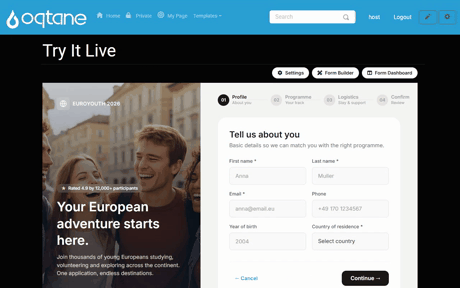

Module Settings & Theme
Every MegaForm module on an Oqtane page has a ⚙ Settings button (visible to administrators, next to Form Builder and Form Dashboard). It opens the MegaForm settings pane — the fastest way to control which form the page shows and how it looks, without opening the builder.

The pane has three tabs: Module form, Theme & Layout, and Current Form settings. The Save module settings button is always visible, whatever tab you are on.
Module form — choose what the page displays
The Module form tab lists every published form on the site. Pick one and save — the page now renders that form. The same form can be shown by several modules on different pages, and a module can be re-pointed at any time without touching the form itself.
Theme & Layout
Theme presets
Pick from the built-in presets — Default, Ocean, Forest, Sunset, Lavender, Midnight, Rose, Amber, Slate, Emerald, Coral, Cyber, Carbon, Arctic, Berry, Earth — and the form recolors instantly, including the premium templates.
Each preset shows its editable colour palette right on the card: click a swatch to adjust the primary / text / background / border colours for this module without leaving the pane. Unsaved changes apply when you press Save module settings.
Layout
- Max width — 480 / 640 / 768 / 960 / Full, controlling how wide the form renders.
- Field spacing — a slider for the vertical rhythm between fields.
- Hide form header — suppress the form's title + description when the page already provides its own heading.
Typography & corners
- Body font / Heading font, base text size, and line height.
- Corner radius — preset steps or a custom pixel value.
Page integration
For forms embedded inline in a content page, Typography source and Color source can be set to Inherit from page, so the form borrows the host skin's font and colours instead of its own.
Tip
Module settings are per module, not per form: the same form can look different on two pages. Form-level design (fields, layout blocks, custom shells) lives in the Form Builder; a full theme editor is available there under Design.